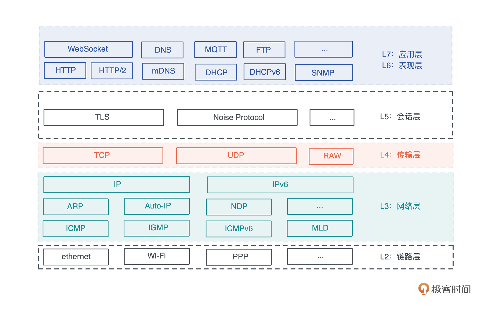
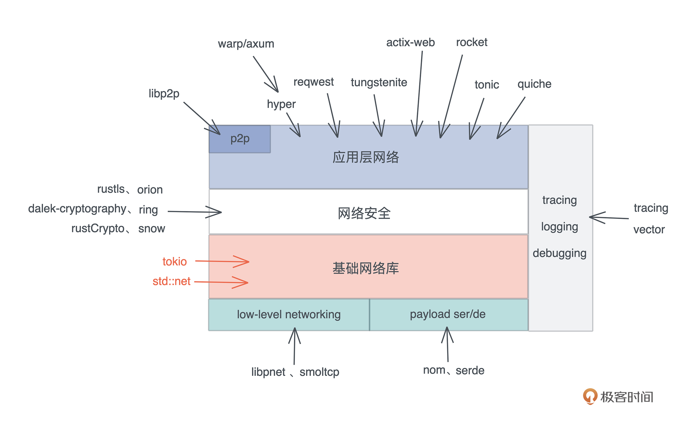
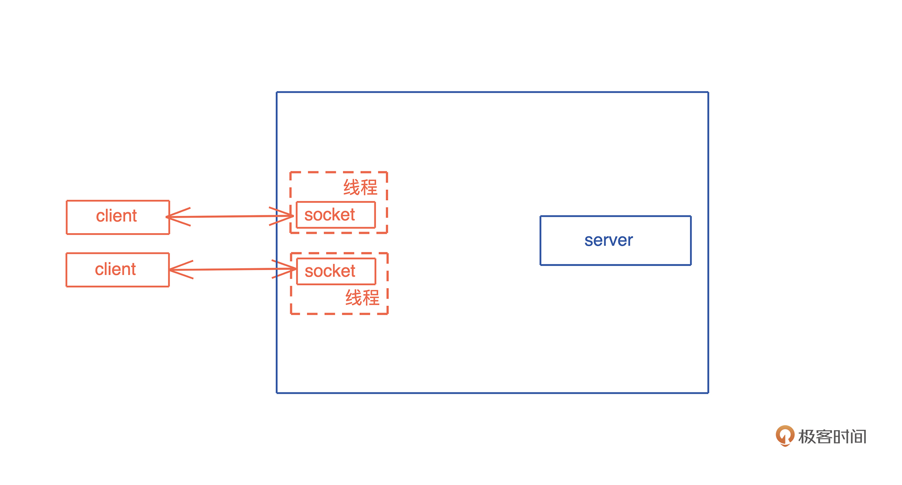
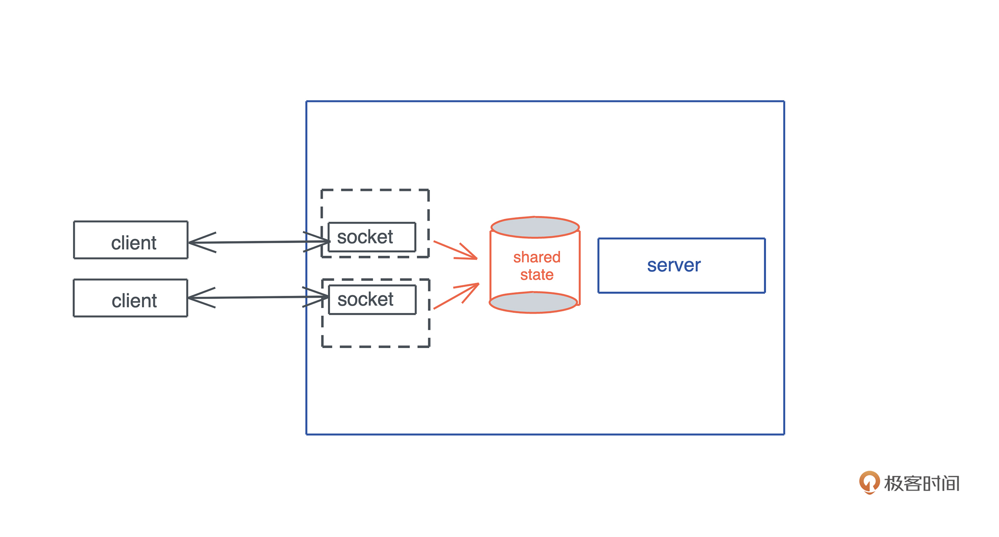
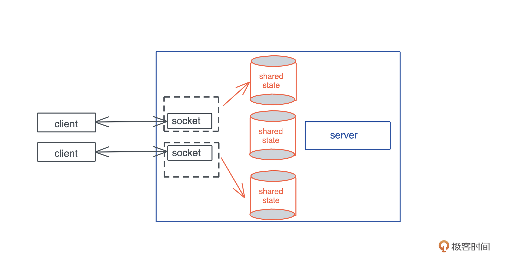
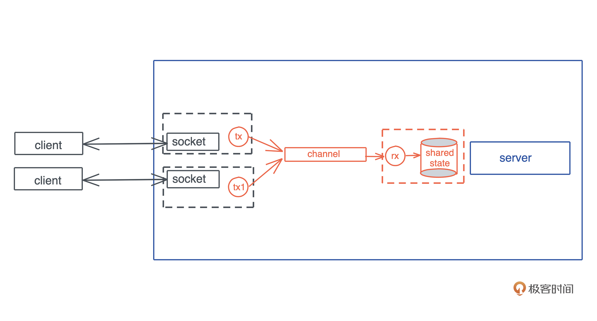
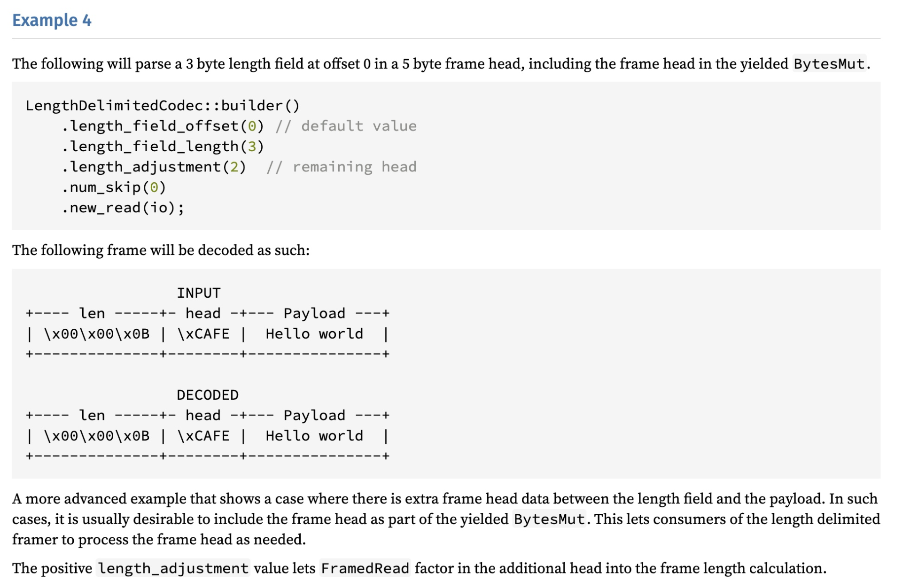

- 00 开篇词 让Rust成为你的下一门主力语言.md
- 01 内存：值放堆上还是放栈上，这是一个问题.md
- 02 串讲：编程开发中，那些你需要掌握的基本概念.md
- 03 初窥门径：从你的第一个Rust程序开始！.md
- 04 get hands dirty：来写个实用的CLI小工具.md
- 05 get hands dirty：做一个图片服务器有多难？.md
- 06 get hands dirty：SQL查询工具怎么一鱼多吃？.md
- 07 所有权：值的生杀大权到底在谁手上？.md
- 08 所有权：值的借用是如何工作的？.md
- 09 所有权：一个值可以有多个所有者么？.md
- 10 生命周期：你创建的值究竟能活多久？.md
- 11 内存管理：从创建到消亡，值都经历了什么？.md
- 12 类型系统：Rust的类型系统有什么特点？.md
- 13 类型系统：如何使用trait来定义接口？.md
- 14 类型系统：有哪些必须掌握的trait？.md
- 15 数据结构：这些浓眉大眼的结构竟然都是智能指针？.md
- 16 数据结构：Vec_T、&[T]、Box[T]_ ，你真的了解集合容器么？.md
- 17 数据结构：软件系统核心部件哈希表，内存如何布局？.md
- 18 错误处理：为什么Rust的错误处理与众不同？.md
- 19 闭包：FnOnce、FnMut和Fn，为什么有这么多类型？.md
- 20 4 Steps ：如何更好地阅读Rust源码？.md
- 21 阶段实操（1）：构建一个简单的KV server-基本流程.md
- 22 阶段实操（2）：构建一个简单的KV server-基本流程.md
- 23 类型系统：如何在实战中使用泛型编程？.md
- 24 类型系统：如何在实战中使用trait object？.md
- 25 类型系统：如何围绕trait来设计和架构系统？.md
- 26 阶段实操（3）：构建一个简单的KV server-高级trait技巧.md
- 27 生态系统：有哪些常有的Rust库可以为我所用？.md
- 28 网络开发（上）：如何使用Rust处理网络请求？.md
- 29 网络开发（下）：如何使用Rust处理网络请求？.md
- 30 Unsafe Rust：如何用C++的方式打开Rust？.md
- 31 FFI：Rust如何和你的语言架起沟通桥梁？.md
- 32 实操项目：使用PyO3开发Python3模块.md
- 33 并发处理（上）：从atomics到Channel，Rust都提供了什么工具？.md
- 34 并发处理（下）：从atomics到Channel，Rust都提供了什么工具？.md
- 35 实操项目：如何实现一个基本的MPSC channel？.md
- 36 阶段实操（4）：构建一个简单的KV server-网络处理.md
- 37 阶段实操（5）：构建一个简单的KV server-网络安全.md
- 38 异步处理：Future是什么？它和async_await是什么关系？.md
- 39 异步处理：async_await内部是怎么实现的？.md
- 40 异步处理：如何处理异步IO？.md
- 41 阶段实操（6）：构建一个简单的KV server-异步处理.md
- 42 阶段实操（7）：构建一个简单的KV server-如何做大的重构？.md
- 43 生产环境：真实世界下的一个Rust项目包含哪些要素？.md
- 44 数据处理：应用程序和数据如何打交道？.md
- 45 阶段实操（8）：构建一个简单的KV server-配置_测试_监控_CI_CD.md
- 46 软件架构：如何用Rust架构复杂系统？.md
- 加餐 Rust2021版次问世了！.md
- 加餐 代码即数据：为什么我们需要宏编程能力？.md
- 加餐 宏编程（上）：用最“笨”的方式撰写宏.md
- 加餐 宏编程（下）：用 syn_quote 优雅地构建宏.md
- 加餐 愚昧之巅：你的Rust学习常见问题汇总.md
- 加餐 期中测试：参考实现讲解.md
- 加餐 期中测试：来写一个简单的grep命令行.md
- 加餐 这个专栏你可以怎么学，以及Rust是否值得学？.md
- 大咖助场 开悟之坡（上）：Rust的现状、机遇与挑战.md
- 大咖助场 开悟之坡（下）：Rust的现状、机遇与挑战.md
- 特别策划 学习锦囊（一）：听听课代表们怎么说.md
- 特别策划 学习锦囊（三）：听听课代表们怎么说.md
- 特别策划 学习锦囊（二）：听听课代表们怎么说.md
- 用户故事 绝望之谷：改变从学习开始.md
- 用户故事 语言不仅是工具，还是思维方式.md
- 结束语 永续之原：Rust学习，如何持续精进？.md
28 网络开发（上）：如何使用Rust处理网络请求？
你好，我是陈天。今天我们学习如何使用 Rust 做网络开发。
在互联网时代，谈到网络开发，我们想到的首先是 Web 开发以及涉及的部分 HTTP 协议和 WebSocket 协议。
之所以说部分，是因为很多协议考虑到的部分，比如更新时的并发控制，大多数 Web 开发者并不知道。当谈论到 gRPC 时，很多人就会认为这是比较神秘的“底层”协议了，其实只不过是 HTTP/2 下的一种对二进制消息格式的封装。
所以对于网络开发，这个非常宏大的议题，我们当然是不可能、也没有必要覆盖全部内容的，今天我们会先简单聊聊网络开发的大全景图，然后重点学习如何使用Rust标准库以及生态系统中的库来做网络处理，包括网络连接、网络数据处理的一些方法，最后也会介绍几种典型的网络通讯模型的使用。
但即使这样，内容也比较多，我们会分成上下两讲来学习。如果你之前只关注 Web 开发，文中很多内容读起来可能会有点吃力，建议先去弥补相关的知识和概念，再学习会比较容易理解。
好，我们先来简单回顾一下 ISO/OSI 七层模型以及对应的协议，物理层主要跟 PHY 芯片有关，就不多提了：-

七层模型中，链路层和网络层一般构建在操作系统之中，我们并不需要直接触及，而表现层和应用层关系紧密，所以在实现过程中，大部分应用程序只关心网络层、传输层和应用层。
网络层目前 IPv4 和 IPv6 分庭抗礼，IPv6 还未完全对 IPv4 取而代之；传输层除了对延迟非常敏感的应用（比如游戏），绝大多数应用都使用 TCP；而在应用层，对用户友好，且对防火墙友好的 HTTP 协议家族：HTTP、WebSocket、HTTP/2，以及尚处在草案之中的 HTTP/3，在漫长的进化中，脱颖而出，成为应用程序主流的选择。
我们来看看 Rust 生态对网络协议的支持：-

Rust 标准库提供了 std::net，为整个 TCP/IP 协议栈的使用提供了封装。然而 std::net 是同步的，所以，如果你要构建一个高性能的异步网络，可以使用 tokio。tokio::net 提供了和 std::net 几乎一致的封装，一旦你熟悉了 std::net，tokio::net 里的功能对你来说都并不陌生。所以，我们先从std::net开始了解。
std::net
std::net 下提供了处理 TCP/UDP 的数据结构，以及一些辅助结构：
- TCP：TcpListener/TcpStream，处理服务器的监听以及客户端的连接
- UDP：UdpSocket，处理 UDP socket
- 其它：IpAddr 是 IPv4 和 IPv6 地址的封装；SocketAddr，表示 IP 地址 + 端口的数据结构
这里就主要介绍一下 TCP 的处理，顺带会使用到 IpAddr/SocketAddr。
TcpListener/TcpStream
如果要创建一个 TCP server，我们可以使用 TcpListener 绑定某个端口，然后用 loop 循环处理接收到的客户端请求。接收到请求后，会得到一个 TcpStream，它实现了 Read/Write trait，可以像读写文件一样，进行 socket 的读写：
use std::{
io::{Read, Write},
net::TcpListener,
thread,
};
fn main() {
let listener = TcpListener::bind("0.0.0.0:9527").unwrap();
loop {
let (mut stream, addr) = listener.accept().unwrap();
println!("Accepted a new connection: {}", addr);
thread::spawn(move || {
let mut buf = [0u8; 12];
stream.read_exact(&mut buf).unwrap();
println!("data: {:?}", String::from_utf8_lossy(&buf));
// 一共写了 17 个字节
stream.write_all(b"glad to meet you!").unwrap();
});
}
}
对于客户端，我们可以用 TcpStream::connect() 得到一个 TcpStream。一旦客户端的请求被服务器接受，就可以发送或者接收数据：
use std::{
io::{Read, Write},
net::TcpStream,
};
fn main() {
let mut stream = TcpStream::connect("127.0.0.1:9527").unwrap();
// 一共写了 12 个字节
stream.write_all(b"hello world!").unwrap();
let mut buf = [0u8; 17];
stream.read_exact(&mut buf).unwrap();
println!("data: {:?}", String::from_utf8_lossy(&buf));
}
在这个例子中，客户端在连接成功后，会发送 12 个字节的 “hello world!“给服务器，服务器读取并回复后，客户端会尝试接收完整的、来自服务器的 17个字节的 “glad to meet you!”。
但是，目前客户端和服务器都需要硬编码要接收数据的大小，这样不够灵活，后续我们会看到如何通过使用消息帧（frame）更好地处理。
从客户端的代码中可以看到，我们无需显式地关闭 TcpStream，因为 TcpStream 的内部实现也处理了 Drop trait，使得其离开作用域时会被关闭。
但如果你去看 TcpStream 的文档，会发现它并没有实现 Drop。这是因为 TcpStream 内部包装了 sys_common::net::TcpStream ，然后它又包装了 Socket。而Socket 是一个平台相关的结构，比如，在 Unix 下的实现是 FileDesc，然后它内部是一个 OwnedFd，最终会调用 libc::close(self.fd) 来关闭 fd，也就关闭了 TcpStream。
处理网络连接的一般方法
如果你使用某个 Web Framework 处理 Web 流量，那么无需关心网络连接，框架会帮你打点好一切，你只需要关心某个路由或者某个 RPC 的处理逻辑就可以了。但如果你要在 TCP 之上构建自己的协议，那么你需要认真考虑如何妥善处理网络连接。
我们在之前的 listener 代码中也看到了，在网络处理的主循环中，会不断 accept() 一个新的连接：
fn main() {
...
loop {
let (mut stream, addr) = listener.accept().unwrap();
println!("Accepted a new connection: {}", addr);
thread::spawn(move || {
...
});
}
}
但是，处理连接的过程，需要放在另一个线程或者另一个异步任务中进行，而不要在主循环中直接处理，因为这样会阻塞主循环，使其在处理完当前的连接前，无法 accept() 新的连接。
所以，loop + spawn 是处理网络连接的基本方式：-

但是使用线程处理频繁连接和退出的网络连接，一来会有效率上的问题，二来线程间如何共享公共的数据也让人头疼，我们来详细看看。
如何处理大量连接？
如果不断创建线程，那么当连接数一高，就容易把系统中可用的线程资源吃光。此外，因为线程的调度是操作系统完成的，每次调度都要经历一个复杂的、不那么高效的 save and load 的上下文切换过程，所以如果使用线程，那么，在遭遇到 C10K 的瓶颈，也就是连接数到万这个级别，系统就会遭遇到资源和算力的双重瓶颈。
从资源的角度，过多的线程占用过多的内存，Rust 缺省的栈大小是 2M，10k 连接就会占用 20G 内存（当然缺省栈大小也可以根据需要修改）；从算力的角度，太多线程在连接数据到达时，会来来回回切换线程，导致 CPU 过分忙碌，无法处理更多的连接请求。
所以，对于潜在的有大量连接的网络服务，使用线程不是一个好的方式。
如果要突破 C10K 的瓶颈，达到 C10M，我们就只能使用在用户态的协程来处理，要么是类似 Erlang/Golang 那样的有栈协程（stackful coroutine），要么是类似 Rust 异步处理这样的无栈协程（stackless coroutine）。
所以，在 Rust 下大部分处理网络相关的代码中，你会看到，很少直接有用 std::net 进行处理的，大部分都是用某个异步网络运行时，比如 tokio。
如何处理共享信息？
第二个问题，在构建服务器时，我们总会有一些共享的状态供所有的连接使用，比如数据库连接。对于这样的场景，如果共享数据不需要修改，我们可以考虑使用 Arc 
但使用锁，就意味着一旦在关键路径上需要访问被锁住的资源，整个系统的吞吐量都会受到很大的影响。
一种思路是，我们把锁的粒度降低，这样冲突就会减少。比如在 kv server 中，我们把 key 哈希一下模 N，将不同的 key 分摊到 N 个 memory store 中，这样，锁的粒度就降低到之前的 1/N 了：-

另一种思路是我们改变共享资源的访问方式，使其只被一个特定的线程访问；其它线程或者协程只能通过给其发消息的方式与之交互。如果你用 Erlang/Golang，这种方式你应该不陌生，在 Rust 下，可以使用 channel 数据结构。-

Rust 下 channel，无论是标准库，还是第三方库，都有非常棒的的实现。同步 channel 的有标准库的 mpsc:channel 和第三方的 crossbeam_channel，异步 channel 有tokio 下的 mpsc:channel，以及 flume。
处理网络数据的一般方法
我们再来看看如何处理网络数据。大部分时候，我们可以使用已有的应用层协议来处理网络数据，比如 HTTP。
在 HTTP 协议下，基本上使用 JSON 构建 REST API/JSON API 是业界的共识，客户端和服务器也有足够好的生态系统来支持这样的处理。你只需要使用 serde 让你定义的 Rust 数据结构具备 Serialize/Deserialize 的能力，然后用 serde_json 生成序列化后的 JSON 数据。
下面是一个使用 rocket 来处理 JSON 数据的例子。首先在 Cargo.toml 中引入：
rocket = { version = "0.5.0-rc.1", features = ["json"] }
然后在 main.rs 里添加代码：
#[macro_use]
extern crate rocket;
use rocket::serde::json::Json;
use rocket::serde::{Deserialize, Serialize};
#[derive(Serialize, Deserialize)]
#[serde(crate = "rocket::serde")]
struct Hello {
name: String,
}
#[get("/", format = "json")]
fn hello() -> Json<Hello> {
Json(Hello { name: "Tyr".into() })
}
#[launch]
fn rocket() -> _ {
rocket::build().mount("/", routes![hello])
}
Rocket 是 Rust 的一个全功能的 Web 框架，类似于 Python 的 Django。可以看到，使用 rocket，10 多行代码，我们就可以运行起一个 Web Server。
如果你出于性能或者其他原因，可能需要定义自己的客户端/服务器间的协议，那么，可以使用传统的 TLV（Type-Length-Value）来描述协议数据，或者使用更加高效简洁的 protobuf。
使用 protobuf 自定义协议
protobuf 是一种非常方便的定义向后兼容协议的工具，它不仅能使用在构建 gRPC 服务的场景，还能用在其它网络服务中。
在之前的实战中，无论是 thumbor 的实现，还是 kv server 的实现，都用到了 protobuf。在 kv server 的实战中，我们在 TCP 之上构建了基于 protobuf 的协议，支持一系列 HXXX 命令。如何使用 protobuf 之前讲过，这里也不再赘述。
不过，使用 protobuf 构建协议消息的时候需要注意，因为 protobuf 生成的是不定长消息，所以你需要在客户端和服务器之间约定好，如何界定一个消息帧（frame）。
常用的界定消息帧的方法有在消息尾添加 “\r\n”，以及在消息头添加长度。
消息尾添加 “\r\n” 一般用于基于文本的协议，比如 HTTP 头/POP3/Redis 的 RESP 协议等。但对于二进制协议，更好的方式是在消息前面添加固定的长度，比如对于 protobuf 这样的二进制而言，消息中的数据可能正好出现连续的”\r\n”，如果使用 “\r\n” 作为消息的边界，就会发生紊乱，所以不可取。
不过两种方式也可以混用，比如 HTTP 协议，本身使用 “\r\n” 界定头部，但它的 body 会使用长度界定，只不过这个长度在 HTTP 头中的 Content-Length 来声明。
前面说到 gRPC 使用 protobuf，那么 gRPC 是怎么界定消息帧呢？
gRPC 使用了五个字节的 Length-Prefixed-Message，其中包含一个字节的压缩标志和四个字节的消息长度。这样，在处理 gRPC 消息时，我们先读取 5 个字节，取出其中的长度 N，再读取 N 个字节就得到一个完整的消息了。
所以我们也可以采用这样的方法来处理使用 protobuf 自定义的协议。
因为这种处理方式很常见，所以 tokio 提供了 length_delimited codec，来处理用长度隔离的消息帧，它可以和 Framed 结构配合使用。如果你看它的文档，会发现它除了简单支持在消息前加长度外，还支持各种各样复杂的场景。
比如消息有一个固定的消息头，其中包含 3 字节长度，5 字节其它内容，LengthDelimitedCodec 处理完后，会把完整的数据给你。你也可以通过 num_skip(3) 把长度丢弃，总之非常灵活：-

下面是我使用 tokio/tokio_util 撰写的服务器和客户端，你可以看到，服务器和客户端都使用了 LengthDelimitedCodec 来处理消息帧。
服务器的代码：
use anyhow::Result;
use bytes::Bytes;
use futures::{SinkExt, StreamExt};
use tokio::net::TcpListener;
use tokio_util::codec::{Framed, LengthDelimitedCodec};
#[tokio::main]
async fn main() -> Result<()> {
let listener = TcpListener::bind("127.0.0.1:9527").await?;
loop {
let (stream, addr) = listener.accept().await?;
println!("accepted: {:?}", addr);
// LengthDelimitedCodec 默认 4 字节长度
let mut stream = Framed::new(stream, LengthDelimitedCodec::new());
tokio::spawn(async move {
// 接收到的消息会只包含消息主体（不包含长度）
while let Some(Ok(data)) = stream.next().await {
println!("Got: {:?}", String::from_utf8_lossy(&data));
// 发送的消息也需要发送消息主体，不需要提供长度
// Framed/LengthDelimitedCodec 会自动计算并添加
stream.send(Bytes::from("goodbye world!")).await.unwrap();
}
});
}
}
以及客户端代码：
use anyhow::Result;
use bytes::Bytes;
use futures::{SinkExt, StreamExt};
use tokio::net::TcpStream;
use tokio_util::codec::{Framed, LengthDelimitedCodec};
#[tokio::main]
async fn main() -> Result<()> {
let stream = TcpStream::connect("127.0.0.1:9527").await?;
let mut stream = Framed::new(stream, LengthDelimitedCodec::new());
stream.send(Bytes::from("hello world")).await?;
// 接收从服务器返回的数据
if let Some(Ok(data)) = stream.next().await {
println!("Got: {:?}", String::from_utf8_lossy(&data));
}
Ok(())
}
和刚才的TcpListener/TcpStream代码相比，双方都不需要知道对方发送的数据的长度，就可以通过 StreamExt trait 的 next() 接口得到下一个消息；在发送时，只需要调用 SinkExt trait 的 send() 接口发送，相应的长度就会被自动计算并添加到要发送的消息帧的开头。
当然啦，如果你想自己运行这两段代码，记得在 Cargo.toml 里添加：
[dependencies]
anyhow = "1"
bytes = "1"
futures = "0.3"
tokio = { version = "1", features = ["full"] }
tokio-util = { version = "0.6", features = ["codec"] }
完整的代码可以在这门课程 GitHub repo 这一讲的目录中找到。
这里为了代码的简便，我并没有直接使用 protobuf。你可以把发送和接收到的 Bytes 里的内容视作 protobuf 序列化成的二进制（如果你想看 protobuf 的处理，可以回顾 [thumbor]和 [kv server]的源代码）。我们可以看到，使用 LengthDelimitedCodec，构建一个自定义协议，变得非常简单。短短二十行代码就完成了非常繁杂的工作。
小结
今天我们聊了用Rust做网络开发的生态系统，简单学习了Rust 标准库提供的 std::net 和对异步有优秀支持的 tokio 库，以及如何用它们来处理网络连接和网络数据。
绝大多数情况下，我们应该使用支持异步的网络开发，所以你会在各种网络相关的代码中，看到 tokio 的身影。作为 Rust 下主要的异步网络运行时，你可以多花点时间了解它的功能。
在接下来的 KV server 的实现中，我们会看到更多有关网络方面的详细处理。你也会看到，我们如何实现自己的 Stream 来处理消息帧。
思考题
在之前做的 kv server 的 examples 里，我们使用 async_prost。根据今天我们所学的内容，你能不能尝试使用使用 tokio_util 下的 LengthDelimitedCodec 来改写这个 example 呢？
use anyhow::Result;
use async_prost::AsyncProstStream;
use futures::prelude::*;
use kv1::{CommandRequest, CommandResponse, Service, ServiceInner, SledDb};
use tokio::net::TcpListener;
use tracing::info;
#[tokio::main]
async fn main() -> Result<()> {
tracing_subscriber::fmt::init();
let service: Service<SledDb> = ServiceInner::new(SledDb::new("/tmp/kvserver"))
.fn_before_send(|res| match res.message.as_ref() {
"" => res.message = "altered. Original message is empty.".into(),
s => res.message = format!("altered: {}", s),
})
.into();
let addr = "127.0.0.1:9527";
let listener = TcpListener::bind(addr).await?;
info!("Start listening on {}", addr);
loop {
let (stream, addr) = listener.accept().await?;
info!("Client {:?} connected", addr);
let svc = service.clone();
tokio::spawn(async move {
let mut stream =
AsyncProstStream::<_, CommandRequest, CommandResponse, _>::from(stream).for_async();
while let Some(Ok(cmd)) = stream.next().await {
info!("Got a new command: {:?}", cmd);
let res = svc.execute(cmd);
stream.send(res).await.unwrap();
}
info!("Client {:?} disconnected", addr);
});
}
}
感谢你的阅读，下一讲我们继续学习网络开发的通讯模型，我们下一讲见～
© 2019 - 2023 Liangliang Lee. Powered by gin and hexo-theme-book.